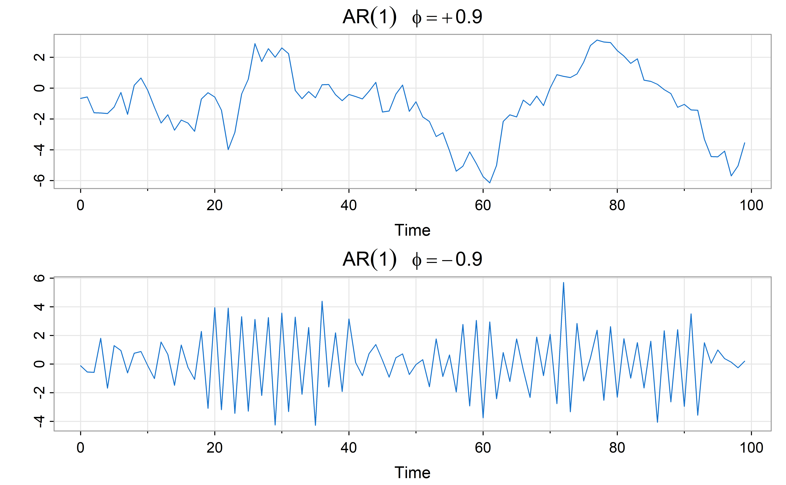

library(tidyverse)
library(kableExtra)
# parametros para imagens
knitr::opts_chunk$set(
fig.width = 8,
fig.asp = 0.73,
fig.retina = 3,
dpi = 300,
out.width = "90%"
)Regressão Linear
Explorando os dados
Anscombe
anscombe <- read.table("anscombe.txt",header=TRUE)
attach(anscombe)
par(mfrow=c(2,2))
plot(x1,y1,xlim=c(4,20),ylim=c(3,14),main="Dados 1")
abline(lsfit(x1,y1))
plot(x2,y2,xlim=c(4,20),ylim=c(3,14),main="Dados 2")
abline(lsfit(x2,y2))
plot(x3,y3,xlim=c(4,20),ylim=c(3,14),main="Dados 3")
abline(lsfit(x3,y3))
plot(x4,y4,xlim=c(4,20),ylim=c(3,14),main="Dados 4")
abline(lsfit(x4,y4))
m1 <- lm(y1~x1)
m2 <- lm(y2~x2)
m3 <- lm(y3~x3)
m4 <- lm(y4~x4)
modelos <- rbind(coef(m1),coef(m2),coef(m3),coef(m4))
colnames(modelos) <- c("Intercept", "x")
modelos Intercept x
[1,] 3.000091 0.5000909
[2,] 3.000909 0.5000000
[3,] 3.002455 0.4997273
[4,] 3.001727 0.4999091Dados de propaganda
O conjunto de dados contém estatísticas sobre as vendas de um produto em 200 diferentes mercados, juntamente com orçamentos publicitários em cada um desses mercados, para diferentes canais de mídia: TV, rádio e jornal. As vendas estão em milhares de unidades e o orçamento está em milhares de dólares. Os dados são oriundo do livro Introduction to Statistical Learning.
library(readxl)
propaganda <- read_excel("Propaganda.xlsx")
summary(propaganda) TV Radio Newspaper Sales
Min. : 0.70 Min. : 0.000 Min. : 0.30 Min. : 1.60
1st Qu.: 74.38 1st Qu.: 9.975 1st Qu.: 12.75 1st Qu.:10.38
Median :149.75 Median :22.900 Median : 25.75 Median :12.90
Mean :147.04 Mean :23.264 Mean : 30.55 Mean :14.02
3rd Qu.:218.82 3rd Qu.:36.525 3rd Qu.: 45.10 3rd Qu.:17.40
Max. :296.40 Max. :49.600 Max. :114.00 Max. :27.00 Renomeando
propaganda <- propaganda %>% rename(Jornal = Newspaper, Vendas = Sales)Sumario
summary(propaganda) TV Radio Jornal Vendas
Min. : 0.70 Min. : 0.000 Min. : 0.30 Min. : 1.60
1st Qu.: 74.38 1st Qu.: 9.975 1st Qu.: 12.75 1st Qu.:10.38
Median :149.75 Median :22.900 Median : 25.75 Median :12.90
Mean :147.04 Mean :23.264 Mean : 30.55 Mean :14.02
3rd Qu.:218.82 3rd Qu.:36.525 3rd Qu.: 45.10 3rd Qu.:17.40
Max. :296.40 Max. :49.600 Max. :114.00 Max. :27.00 nrow(propaganda)[1] 200Linhas inicias
library(gt)
gt(head(propaganda, 10))| TV | Radio | Jornal | Vendas |
|---|---|---|---|
| 230.1 | 37.8 | 69.2 | 22.1 |
| 44.5 | 39.3 | 45.1 | 10.4 |
| 17.2 | 45.9 | 69.3 | 9.3 |
| 151.5 | 41.3 | 58.5 | 18.5 |
| 180.8 | 10.8 | 58.4 | 12.9 |
| 8.7 | 48.9 | 75.0 | 7.2 |
| 57.5 | 32.8 | 23.5 | 11.8 |
| 120.2 | 19.6 | 11.6 | 13.2 |
| 8.6 | 2.1 | 1.0 | 4.8 |
| 199.8 | 2.6 | 21.2 | 10.6 |
Estatísticas descritivas
library(psych)
Attaching package: 'psych'The following objects are masked from 'package:ggplot2':
%+%, alphadescribe(propaganda) vars n mean sd median trimmed mad min max range skew
TV 1 200 147.04 85.85 149.75 147.20 108.82 0.7 296.4 295.7 -0.07
Radio 2 200 23.26 14.85 22.90 23.00 19.79 0.0 49.6 49.6 0.09
Jornal 3 200 30.55 21.78 25.75 28.41 23.13 0.3 114.0 113.7 0.88
Vendas 4 200 14.02 5.22 12.90 13.78 4.82 1.6 27.0 25.4 0.40
kurtosis se
TV -1.24 6.07
Radio -1.28 1.05
Jornal 0.57 1.54
Vendas -0.45 0.37Histogramas
par(mfrow = c(2, 2))
hist(propaganda$TV,breaks="Sturges", main="TV - Regra de Sturges")
hist(propaganda$Radio,breaks="Sturges", main="Radio - Regra de Sturges")
hist(propaganda$Jornal, breaks="Sturges", main="Jornal - Regra de Sturges")
hist(propaganda$Vendas, breaks="Sturges", main="Vendas - Regra de Sturges")
par(mfrow = c(1, 1))Grafico de Densidade
library(patchwork)
g1 <- ggplot(propaganda, aes(TV)) + geom_density()
g2 <- ggplot(propaganda, aes(Radio)) + geom_density()
g3 <- ggplot(propaganda, aes(Jornal)) + geom_density()
g4 <- ggplot(propaganda, aes(Vendas)) + geom_density()
(g1 + g2)/(g3 + g4) 
Box-Plot
library(caret)Carregando pacotes exigidos: lattice
Attaching package: 'caret'The following object is masked from 'package:purrr':
liftfeaturePlot(x = propaganda[ , c("TV", "Radio", "Jornal")], y=factor(rep("Midia",200)), "box")Grafico de Dispersão
featurePlot(x = propaganda[ , c("TV", "Radio", "Jornal")], y = propaganda$Vendas)Matriz de dispersão
pairs.panels(propaganda) library(GGally)Registered S3 method overwritten by 'GGally':
method from
+.gg ggplot2ggpairs(propaganda)Correlações
mcorr <- cor(propaganda)
library(corrplot)corrplot 0.92 loadedcorrplot(mcorr)
corrplot(mcorr,method = "number")
Criando amostra de treino e teste
library(caret)
set.seed(21)
y <- propaganda$Vendas
indice_teste <- createDataPartition(y, times = 1, p = 0.20, list = FALSE)
conj_treino <- propaganda %>% slice(-indice_teste)
conj_teste <- propaganda %>% slice(indice_teste)
str(conj_treino)tibble [159 × 4] (S3: tbl_df/tbl/data.frame)
$ TV : num [1:159] 17.2 151.5 8.7 120.2 199.8 ...
$ Radio : num [1:159] 45.9 41.3 48.9 19.6 2.6 5.8 24 35.1 7.6 32.9 ...
$ Jornal: num [1:159] 69.3 58.5 75 11.6 21.2 24.2 4 65.9 7.2 46 ...
$ Vendas: num [1:159] 9.3 18.5 7.2 13.2 10.6 8.6 17.4 9.2 9.7 19 ...str(conj_teste)tibble [41 × 4] (S3: tbl_df/tbl/data.frame)
$ TV : num [1:41] 230.1 44.5 180.8 57.5 8.6 ...
$ Radio : num [1:41] 37.8 39.3 10.8 32.8 2.1 39.6 23.9 3.5 28.3 17.4 ...
$ Jornal: num [1:41] 69.2 45.1 58.4 23.5 1 55.8 19.1 19.5 43.2 38.6 ...
$ Vendas: num [1:41] 22.1 10.4 12.9 11.8 4.8 24.4 14.6 12 21.4 11.9 ...gt(head(conj_treino, 10))| TV | Radio | Jornal | Vendas |
|---|---|---|---|
| 17.2 | 45.9 | 69.3 | 9.3 |
| 151.5 | 41.3 | 58.5 | 18.5 |
| 8.7 | 48.9 | 75.0 | 7.2 |
| 120.2 | 19.6 | 11.6 | 13.2 |
| 199.8 | 2.6 | 21.2 | 10.6 |
| 66.1 | 5.8 | 24.2 | 8.6 |
| 214.7 | 24.0 | 4.0 | 17.4 |
| 23.8 | 35.1 | 65.9 | 9.2 |
| 97.5 | 7.6 | 7.2 | 9.7 |
| 204.1 | 32.9 | 46.0 | 19.0 |
Regressão Simples \(Vendas \sim TV\)
mod1 <- lm( Vendas ~ TV, data = conj_treino)Informações do ajuste e Resultados
names(mod1) [1] "coefficients" "residuals" "effects" "rank"
[5] "fitted.values" "assign" "qr" "df.residual"
[9] "xlevels" "call" "terms" "model" summary(mod1)
Call:
lm(formula = Vendas ~ TV, data = conj_treino)
Residuals:
Min 1Q Median 3Q Max
-7.8261 -1.7616 -0.0599 1.8989 7.3220
Coefficients:
Estimate Std. Error t value Pr(>|t|)
(Intercept) 7.21359 0.50614 14.25 <2e-16 ***
TV 0.04614 0.00301 15.33 <2e-16 ***
---
Signif. codes: 0 '***' 0.001 '**' 0.01 '*' 0.05 '.' 0.1 ' ' 1
Residual standard error: 3.158 on 157 degrees of freedom
Multiple R-squared: 0.5995, Adjusted R-squared: 0.5969
F-statistic: 235 on 1 and 157 DF, p-value: < 2.2e-16sum_mod1 <- summary(mod1)
names(sum_mod1) [1] "call" "terms" "residuals" "coefficients"
[5] "aliased" "sigma" "df" "r.squared"
[9] "adj.r.squared" "fstatistic" "cov.unscaled" Outras informações do Ajuste
sum_mod1$sigma[1] 3.15769sum_mod1$r.squared[1] 0.5994649Gráfico da Regressão
coeflinear <- mod1$coefficients[1]
coefang <- mod1$coefficients[2]
ggplot(conj_treino, aes(x=TV, y=Vendas)) +
geom_point() +
geom_abline(slope = coefang,intercept = coeflinear, color="blue" ) +
geom_hline(yintercept=coeflinear, linetype="dashed", color = "red")Gráfico da Regressão
library(car)
scatterplot(Vendas ~ TV, data = conj_treino, smooth=F)Intervalo de Confiança para \(\beta_0\) e \(\beta_1\)
confint(mod1, level=0.95) 2.5 % 97.5 %
(Intercept) 6.21386581 8.21330660
TV 0.04019365 0.05208397Previsões
predict(mod1, data.frame(TV=c(50, 150, 250)), interval = "prediction") fit lwr upr
1 9.520527 3.237859 15.80319
2 14.134407 7.877747 20.39107
3 18.748288 12.461271 25.03530ANOVA
anova(mod1)Analysis of Variance Table
Response: Vendas
Df Sum Sq Mean Sq F value Pr(>F)
TV 1 2342.9 2342.94 234.98 < 2.2e-16 ***
Residuals 157 1565.5 9.97
---
Signif. codes: 0 '***' 0.001 '**' 0.01 '*' 0.05 '.' 0.1 ' ' 1Analisando os Resíduos
par(mfrow = c(2, 2))
plot(mod1)
par(mfrow = c(1, 1))Verificando Independencia dos Resíduos
library(lmtest)Carregando pacotes exigidos: zoo
Attaching package: 'zoo'The following objects are masked from 'package:base':
as.Date, as.Date.numericdwtest(mod1)
Durbin-Watson test
data: mod1
DW = 1.8578, p-value = 0.1835
alternative hypothesis: true autocorrelation is greater than 0Verificando Homocedasticidade dos Resíduos
bptest(mod1)
studentized Breusch-Pagan test
data: mod1
BP = 37.881, df = 1, p-value = 7.519e-10Verificando Pontos Afastados
#car
influencePlot(mod1)
StudRes Hat CookD
25 -2.55414901 0.02527870 8.171837e-02
29 -0.01917304 0.02604819 4.947274e-06
102 2.36589044 0.01128730 3.104163e-02
104 -1.82461340 0.02550673 4.293306e-02
139 2.27443079 0.02182638 5.621969e-02Verificando Normalidade dos Resíduos
library(moments)
jarque.test(sum_mod1$residuals)
Jarque-Bera Normality Test
data: sum_mod1$residuals
JB = 0.28717, p-value = 0.8662
alternative hypothesis: greaterTransformação de Box-Cox
#car
boxCox(mod1)Avaliando Modelo com Conjunto de Teste
# Erro de Teste
sqrt(mean((conj_teste$Vendas - predict(mod1, conj_teste)) ^ 2)) [1] 3.629383# Erro de Treino
sum_mod1$sigma[1] 3.15769